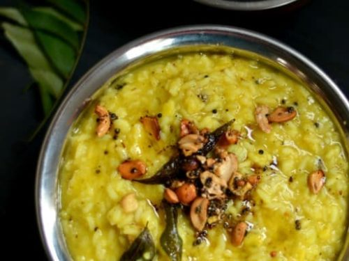
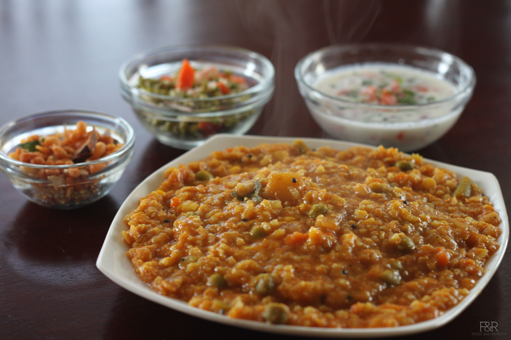
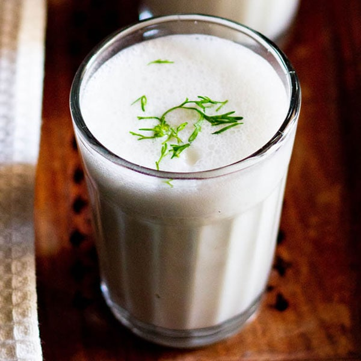
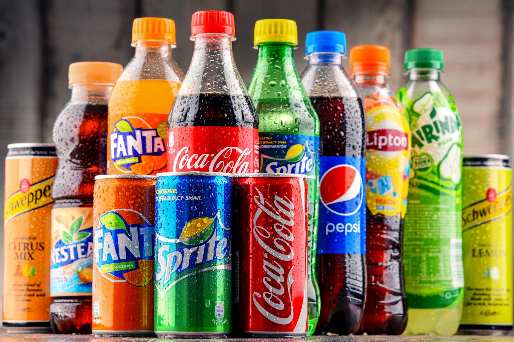
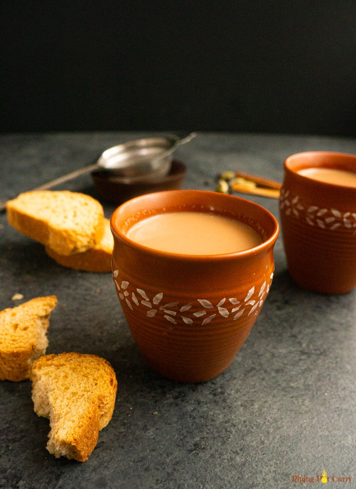

Mystique Masala
Home
Menu
Nutrition Menu
Contact Us
About Us
Login
Cart
Item-1
Item-2
Item-3
Checkout
Main dishes
Dosa
₹ 85
A dish made from fermented Lentil and Rice batter which is seared to perfection and served with Sambar and a band of chutneys.
Idli Sambar
₹ 45
Soft fluffy steamed cakes known as Soft idli are served with sambar, a vegetable lentil stew.
Dal Vada
₹ 45
A savory snack made by frying chana dal, spices, onions and herbs which is generally eaten with a chutney.
Adai
₹ 70
A delicious protein-rich rice and lentils pancake.
Yam Fries
₹ 100
Yam fries that are salty-sweet, crunchy, and spicy.
Curd Rice
₹ 75
A simple but delicious dish made by mixing rice and curd along with some spices.
Mango Rice
₹ 135
Sour and Savoury rice made with raw mangoes and rice.
Lemon rice
₹ 85
Fragrent and tangy rice made in a way similar to that of mango rice.
Khara Pongal
₹ 105

South Indian porridge made with rice and yellow moong lentils. It can be made sweet or savory.
Bisi Bele Bath
₹ 70

A delicious complete and healthy meal of rice, lentils and vegetables. It is one of the most popular traditional dish from the Karnataka cuisine.
Beverages
Buttermilk
₹ 25

Is a fermented dairy drink. Traditionally, it was the liquid left behind after churning butter out of cultured cream.
Lemonade
₹ 30
Lemonade is a sweetened lemon-flavored beverage.
Filter coffee
₹ 30
Coffee made by roasting beans grown in Tamil Nadu, the origin place of the filter Coffee.
Soft drinks (750 ml bottles)
₹ 45

Tea
₹ 15

Made from dried tea leaves from provinces of Tamil Nadu and Kerela.